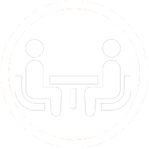
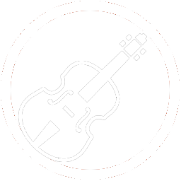

INFO
アンサンブルファミーユ 2020新歓情報
2020年度アンサンブルファミーユの新歓情報を掲載しています。なお、新型コロナウイルスへの対応のため下記の情報は変更される場合がありますので、適宜更新状況をご確認ください。
募集要項
2020年度の募集要項は、以下の通りです。
| 募集人数 | 募集状況 | 初心者受け入れ | 貸し楽器※ |
|---|
| バイオリン | 3-4人 | 募集中 | ● | ● |
|---|
| クラリネット | 3人 | 募集中 | ● | ● |
|---|
| フルート | 3-4人 | 募集中 | ● | ● |
|---|
| アルトサックス | 2-3人 | 募集中 | ● | ● |
|---|
| テナーサックス | 2人 | 募集中 | ● | ● |
|---|
| バリトンサックス | 0-1人 | 募集中 | | ● |
|---|
| トランペット | 4人 | 募集中 | ● | ● |
|---|
| トロンボーン | 3人 | 募集中 | ● | ● |
|---|
| ギター | 2人 | 募集中 | ● | |
|---|
| ベース | 1-2人 | 募集中 | ● | |
|---|
| キーボード | 2人 | 募集中 | ● | ● |
|---|
| ドラム | 1-2人 | 募集中 | ● | |
|---|
※楽器貸し出しのルールについては、各パートごとに異なります。楽器の貸し出しを希望される方は、学期体験や練習見学にいらっしゃった際に、必ず各パートのパートリーダーへ確認をとってください。
(例1) バイオリンパートは、基本5月初旬に楽器を購入。入会後購入までの期間に楽器を貸し出し可能。
(例2) トロンボーンパートは、貸し出しは夏までで、夏に楽器を購入してもらう必要あり。
詳しい日程などは決定次第更新いたします。
入会までの流れ
例年の入会までの流れを紹介します。2020年度の入会までの流れは、コロナウイルスへの対策により変更される場合があります。2020年度の入会までの流れは、決定され次第更新いたします。
01 サークル説明会/履修相談

ファミーユでの1年間の行事、予定を説明します。また、優秀な現役生が履修科目選定のサポートします。
02 楽器体験

新しい楽器に挑戦してみたい方は、楽器体験で楽器に触れてみましょう。現役生が音の出し方を教えます。様々な楽器に触れる中で、あなたの意外な才能が発掘されるかも?
03 食事会

サークルの雰囲気を掴んだり、履修相談に乗ってもらうために食事会に参加してみましょう。サークルは大学生活を送る上で重要なコミュニティです。雰囲気が自分に合っているか見極めるのはとても大切ですよ!
04 練習見学【必須】
練習の様子を見学してみましょう。ファミーユでは入会申し込みにあたって練習見学への参加が必須です。以降のステップで必要な入会申込書は、ここでお渡しします。
05 入会申込書提出【必須】

入会申込書を希望楽器のパートリーダーに提出します。後日、面接の日程をお伝えします。
06 面接【必須】

希望パートの現役生と面接を行います。面接とはいっても、希望者がサークルに参加できそうか、やる気があるかを確認するためのもので、楽器を演奏してもらったり、演奏技術を試すようなことはしません。お気軽にお越しください。
入会

サークル説明会/履修相談のご案内
今年度のサークル説明会や履修相談は、食堂棟3Fの「たまり」にて、または練習見学と並行して随時行います。たまりでの説明会、履修相談が可能な日程につきましては、決定され次第更新いたします。
楽器体験のご案内
ファミーユでは新しい楽器に挑戦したい方を応援するために、新歓期に楽器体験を行っています。今年度の楽器体験の詳細については、決定され次第更新いたします。
食事会のご案内
実際に部員と話してサークルの雰囲気を掴みたい、履修相談をしたい、そういった方のために食事会を用意しています。
食事会の日程
時間に関しては、決定され次第更新いたします。
| 日程 | 時間 | 場所 |
|---|
| 4/30(木) | 練習終了後 | 三田 |
|---|
| 5/3(日) | 昼頃 | 日吉 |
|---|
| 5/5(火) | 練習終了後 | 三田 |
|---|
| 5/7(木) | 練習終了後 | 三田 |
|---|
全体食事会の日程
現役部員が全員参加しての大きな食事会を予定しています。
なお、飲酒はご遠慮いただいておりますので、ご了承ください。
場所、時間に関しましては決定され次第更新いたします。
練習見学のご案内
ファミーユでは練習の雰囲気を掴んでいただけるよう、毎年練習見学を行っています。
入会にまでには必ず練習見学をしていただく決まりとなっておりますので、興味をお持ちの方は必ずお越しください。
予約は必要ありませんが、LINE公式アカウントの個別メッセージ等で事前に連絡いただけるとスムーズだと思います。
練習見学の日程
| 日程 | 時間 | 場所 |
|---|
| 4/30(木) | 18:20-20:00 | 三田キャンパス 西校舎 |
|---|
| 5/3(日) | 未定 | 日吉キャンパス 塾生会館 |
|---|
| 5/5(火) | 18:20-20:00 | 三田キャンパス 西校舎 |
|---|
| 5/7(木) | 18:20-20:00 | 三田キャンパス 西校舎 |
|---|
上記の日程以前であっても、現役生通常練習の見学ができる場合があります。春休み、オリエン期間中にお時間ある方は、ぜひLINE公式アカウントの個別メッセージなどでご連絡ください。